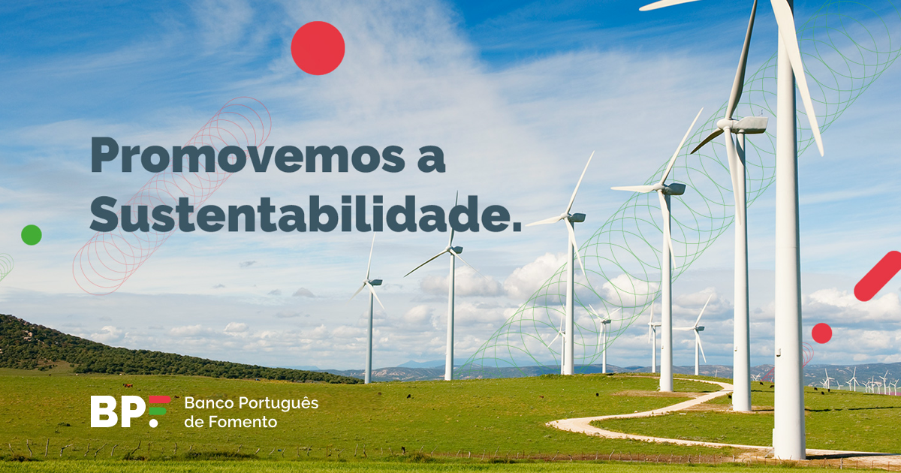

Banking web app QA
Elinext supported a regulated banking web app with manual and automated testing, reducing post-release risk and speeding release cycles.
Read the case studyPrepared for David Branco
BPF InvestEU is already a digital financing path for Portuguese companies. As volume grows, delivery partners must be easy to govern, test and renew.
David, we saw BPF hiring an IT Procurement Specialist in Porto. The role connects business, technology and suppliers, and asks for control of public contracts, SLAs, budget and the plan for systems and applications.

The signal tells us BPF is tightening how IT work is bought and managed. That fits the public push around BPF InvestEU, pre-approved guarantees and simpler digital flows. The bottleneck is not only finding suppliers. It is keeping external delivery fast while public-contract rules, security checks and SLA control stay clear. If that gap stays open, systems evolve slower than the business programs they support.
Engagement model: a dedicated squad under BPF's PO or PM, working inside David's procurement and security rules.
Start with a six-week pilot, then keep the squad as quarterly capacity if it proves useful.
Review active BPF applications, supplier duties and SLA points, then mark where external delivery can enter safely.
Set a pilot backlog for InvestEU and Portal Banca changes, with clear acceptance rules for each release.
Automate key regression paths around forms, document checks and partner data handoffs before each production window.
Build simple status reports for procurement, budget, risk and renewals, so decisions are ready before contracts move.
Elinext is a full-cycle software development provider, active since 1997, with about 700 in-house specialists and no freelancers. We fit this work because regulated teams need stable delivery, clear security rules and senior people who can join existing governance. Our references include Siemens, Broadcom, Volkswagen and TUI. Elinext holds ISO 27001 for information security and ISO 9001 for quality management. The same model fits BPF: a small senior squad, measured by release quality, supplier clarity and useful handover.
Elinext supported a regulated banking web app with manual and automated testing, reducing post-release risk and speeding release cycles.
Read the case study
Elinext built backend services for a bank software provider using Java, Kubernetes and Docker for safer data access.
Read the case study